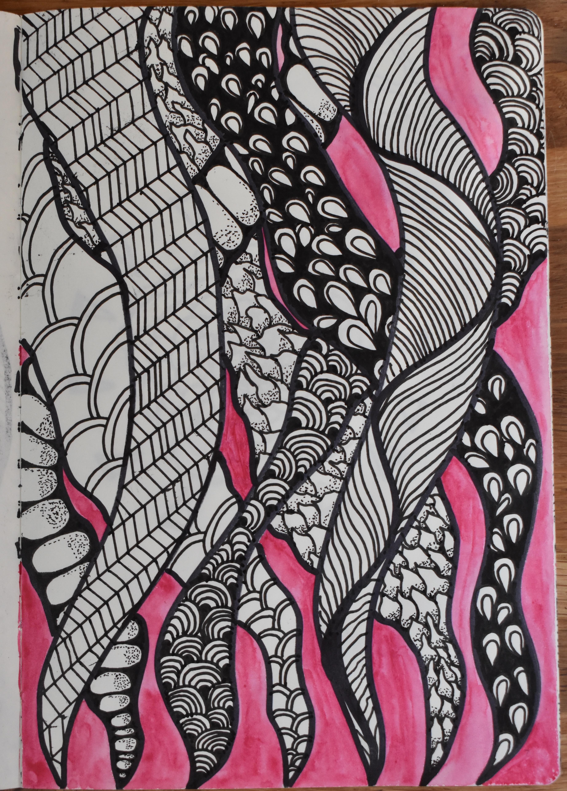

Drawing from the pandemic quarantine, during my sophomore year of high school. Growing up, I particularly liked drawing logos or geometric designs that were done neatly and confined to specific spaces. As I've gotten older, I find more joy in more dynamic pieces.
